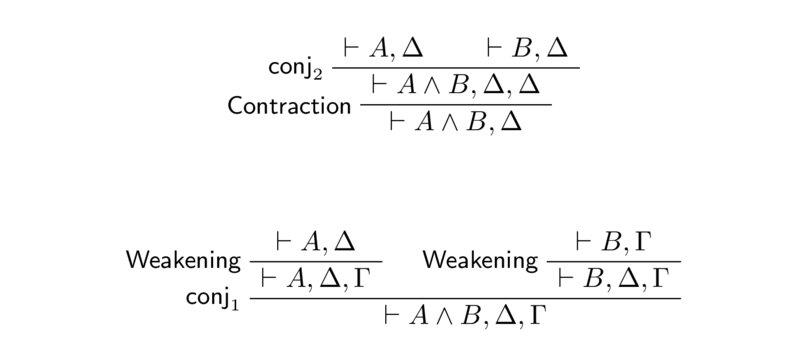

Introduction to Linear Logic and the Identity of Proofs
Table of Contents
1 Introduction
Linear logic is relatively new type of logic created by Jean-Yves Girard in 1987 [1]. This logic is especially applicable to mathematics and computer science, but could also have potential wider ranging applications such as in chemistry, linguistics [2], game semantics [2] and quantum physics/computing [3]. Our focus today will be on what linear logic is, why it exists and how it relates to both computation and something called the identity of proofs.
1.1 Prerequisite Knowledge
You should know some basic (classical) logic. Basically, you need to understand what these symbols mean: \(\lor, \land, \lnot, \implies, \iff\) and what their truth tables are. You need to understand how to read a mathematical proof, such as the one showing that the square root of 2 is irrational. You should know about proofs by contradiction and preferably proofs by contrapositive too. Having some level of mathematical maturity can't hurt either. No prior knowledge of formal logic syntax is assumed.
This piece is aimed at both computer scientists and mathematicians, although programming and computer science knowledge isn't required unless you want to understand some of the applications.
1.2 Structure
If for some reason the reader only has 5-10 minutes then it is worth looking over at least the following subsections:
First we give a broad overview of proof theory and how it fits in with the rest of mathematics. Then, to provide a relative grounding point for people who may not know much about formal systems or why alternative logic systems exist, an explanation is given on how formal systems work for the type of logic the reader is expected to know about. This is followed by a brief visit on intuitionistic logic and what constructiveness is and why it arose. Linear logic is then explained using the definitions and analogies provided in the previous sections for both its syntax and semantics. Finally, the the identity of proofs is given as a closing thought for how large questions are still being researched and how this relates to computation and proof theory.
1.3 Broad Overview of Applications and Proof Theory
Linear logic is the logic of state transitions and state machines. Whereas other types of logic (such as classical and intuitionistic) are concerned with truth, linear logic is concerned with state transitions and resource consumption. Given these are vital topics in most of computer science, it should be relatively easy to understand why a computer scientist may be interested in it, including for:
- Compilation and Optimisation
- Concurrency and Parallelism [4]
- Uniqueness Types (A variable that is only used in a single thread at any given time) [5]
- Formal verification
- Natural Language Processing [2]
and more.
Linear logic corresponds to linear type systems and is similar to affine type
systems like that in Rust, so it should interest anyone who uses Linear
Haskell, or move semantics in C++, or likes to Rewrite it in Rust™. For
example, say you have a programming language and created a variable f to
some resource that you want to get rid of, such as closing a file descriptor
after you have finished writing to a file. You would then call some function
close(f) to close the file descriptor (in Python this would be done
automatically when you use with open() syntax). Once you have written to a
file, it is an error to use the file descriptor again, so it is useful to
have a type system that allows you to express that you cannot use it again.
Languages such as C do not have type systems that can encode semantics like
this resulting in a runtime error, and this is in contrast to other languages
like Rust and Linear Haskell. In Rust, this can be done by defining the close
function such that the function takes ownership of the variable. The
compiler is then able to raise an error anytime f is used after close(f).
On the mathematical side, linear logic has close relations to proof theory and may help shine some light on what it means to prove something and how two mathematical proofs can be equivalent despite appearing completely different. We will explore this in more detail when we get onto the identity of proofs. Because, under the Curry-Howard correspondence, mathematical proofs are (functional) computer programs, it could also shine some light on how two different programs can have the same effects despite having completely different source codes.
Proof theory is the study of mathematical proofs. This includes, for example, studying the complexity of proofs and what it means to prove something. We will mostly be concerned with the area that studies how two proofs can prove the same thing while being syntactically different. To illustrate how this can work, a simplification of our current mathematical knowledge is given below.
This figure encapsulates all statements that can be true and false. Only a
small number of statements are shown in the figure because of course we
cannot list all possible statements, and certainly none of those which we do
not know their truth values. Within this lies the cloud of human knowledge:
the statements we know are true and false. This includes proven statements
such as the Pythagorean Theorem and 1 + 2 = 3, and proven false statements
such as 1 = 2. We want to be able to reason
about how we derive mathematical proofs. Therefore, we need some kind of
formalisms to reason about these facts. For example, we may know that
2 + 2 = 4 and therefore can derive, using some kind of logic rule
(an "inference rule"), that its
negation 2 + 2 ≠ 4 is false. This is shown as an arrow from the former
to the latter to show that it takes one logical step to go from one to the
other. Similarly, we could have known 2 + 2 = 4 from knowing that
2 + 1 = 3 and that adding 1 to both sides keeps its truth value the same.
Therefore, we could have similarly derived 2 + 2 = 4 from the statement
1 + 2 = 3 even though that is syntactically different from
2 + 1 = 3. This can be generalised to any statements A, B, C such
that from A and B we can derive C or using both A and B
together we can derive C.
Consider how this diagram relates to proof by contradiction. First we start with a set of known statements and axioms. Then we consider some new statement for the proposition we are trying to prove and assume it is true. When we end up in a contradiction, that means that the new statement is incompatible with our current knowledge and so it follows that it must be false.
There are mathematical structures like the one shown above and these form syntactic categories which will not be covered here. For now, we are rather concerned with the syntax and semantics of linear logic, which we will now start to look into. One theme that will keep coming up, which is not obvious to most computer scientists or even some mathematicians, is the idea that formal systems, their semantics and their mathematical applications are different. A formal system is a system with a set of rules that can be executed mechanically, such as by a computer, and has no other real meaning. The semantics of a system are possible interpretations of the mechanical formal system. And the reasons for having such notions was due to the proof theoretic need to formally study a corresponding mathematical proof's behaviour. An example of this is given below using classical logic.
2 Why a New Type of Logic?
If you are not well acquainted with logic then the first thing you might ask would be: why a new type of logic? To understand this, we will start with classical logic and work our way through why alternatives would have arisen.
2.0.1 Classical Logic: Syntax, Semantics and Mathematical Proofs
Classical logic is the logic normally taught and used throughout any typical undergraduate mathematics course. It is the "standard" type of logic.
There are three concepts at play here:
- Syntax
- Semantics
- Mathematical and Proof Theoretic Applications
These three concepts will now be defined for classical logic.
Let \(\{ a_1, a_2, \dots \} \cup \{\bot, \top\}\) be the set of all variables including the constants bottom (⊥) and top (⊤). Bottom represents universal and undoubtable contradiction while top represents universal and undoubtable tautology or truth. A classical logic formula is either a variable or constant, a negation \(\lnot\) of a formula, or two formulae joined up by one of the following binary connectives:
- Conjunction ("and") \(\land\)
- Disjunction ("or") \(\lor\)
- Implication ("implies") \(\Rightarrow\)
We typically use lowercase letters for variables (\(a\)) and uppercase for formulae (\(A\)).
A formula in this system is said to be derivable if it can be produced using some particular set of mechanical rules. By mechanical, it is meant that it can be easily and formally instructed in such a way that even a computer could perfectly perform such operations with neither ambiguity nor error. This is what is meant by a formal system of logic, which will be defined further below once we have looked at the semantics and applications of a formal system.
One possible semantic interpretation of the above syntax for variables
and formulae is that each
variable is a boolean variable that takes one of two values: true or
false. A formula is true or a tautology if its truth table is always
true regardless of the assignment of variables. For example,
\(a \lor \lnot a\) is a tautology because it is always true. If a formula is
only sometimes true — meaning that there is at least one row,
corresponding to one assignment of variables, in its truth table that
results in the formula being true — then it is satisfiable. For example,
\(a \land b\) is satisfiable because it is true if only if \(a\) and
\(b\) are assigned true.
There does not have to be just one semantic for any system. Any system can have many semantics and this is why we separate the meaning of a mechanical system from its formal rigorous definitions.
The above semantic interpretation and its system are used in order to try and model the
type of mathematical reasoning used in a standard mathematics proof. That
means any kind of proof that would be taught in most university courses,
such as that of the square root of 2 being irrational. By modelling a proof
such at that, we can then try to understand and reason about what is true or
provable in mathematics. One particular area of interest is that proofs that
prove the same statement can be completely different, either due to trivial
changes like having statements appear in a slightly different order, or due
to having some similar "essence" of the proof that is kept in both proofs.
By studying what keeps this "essence" throughout vastly different proofs, we
may find out what exactly are the core components of a proof and what it
truly means to prove something. Hence this area of mathematics is called
proof theory. From a computer science perspective, are two different
computer programs of mergesort the same even if one is done in place and
one is done by constructing a new array? What about more complex ways of
writing a program that achieves the same effect? How would you write a
compiler that understands this difference and any others that maintain the
equivalence of the program?
Before we can begin modelling mathematical proofs, we need to consider what underlying principles are at play when creating a standard mathematics proof. Here is a list of some [6,7]:
- The Law of Non-Contradiction: Something cannot be both true and false. \(\forall A: \lnot (A \land \lnot A).\)
- The Law of Excluded Middle (LEM): A statement is either true or false. If it is not true, then it must be false. \(\forall A: A \lor \lnot A\). This is how proof by contradiction works; if the square root of 2 is not rational then it must be irrational. This is also the main principle that mathematicians of another type of logic, known as intuitionistic logic, have a problem with.
- Double Negation Elimination (DNE): For all statements: \(\lnot \lnot A\) is equivalent to or otherwise implies \(A\).
- The Principle of Explosion: From absurd and contradictory statements you
can prove anything. \(\forall A, B: (A \land \lnot A) \implies B\).
A classic classical example of this is that by dividing by zero in a
standard proof you can show that
1 = 2. - The DeMorgan Laws: \[\lnot (A_1 \land \dots \land A_n) \equiv \lnot A_1 \lor \dots \lor \lnot A_n\] \[\lnot (A_1 \lor \dots \lor A_n) \equiv \lnot A_1 \land \dots \land \lnot A_n\] We need to be careful about writing \(\equiv\) (equivalence) rather than = (equals). Semantically they are "equal" because the equations have the same boolean interpretation and standard mathematical meaning. However, because we are working at a lower level of mathematics where the differences are not abstracted away, we cannot just say that they are equal because syntactically (and "visually") they are not.
When creating a formal system, the goal is to identify these equivalences in a meaningful way to model the semantic equality. Once you have considered the standard mathematical properties, you can create a mechanical system that has the desired semantics in order to model standard mathematics proofs. This is why formal systems, their semantics and their applications are different, though they are clearly closely related. Let's now look at what an actual formal system looks like.
2.0.2 Classical Sequent Calculus
One mechanical syntactic system is sequent calculus. A sequent is a collection of formulae of the form \[ P_1, \dots, P_n \vdash Q_1, \dots, Q_n \] which has the semantic meaning that \[ P_1 \land \dots \land P_n \implies Q_1 \lor \dots \lor Q_n. \] The symbol ⊢ is known as a turnstile.
Since in classical logic \[P \implies Q \equiv \lnot P \lor Q,\] often a single-sided sequent calculus is used and we can rewrite the above sequent as \[ \vdash \lnot P_1, \dots, \lnot P_n, Q_1, \dots, Q_n. \]
We often do not want to write an entire sequent when looking at just one part of it, as they can get rather large, so we write capital Greek letters, typically \(\Gamma, \Delta\) in place of an arbitrary list of formulae including a zero-length list. The above sequents can be rewritten as \(\Gamma \vdash \Delta\) and \(\vdash \lnot \Gamma, \Delta\) where \[\Gamma = P_1, \dots, P_n,\] \[\lnot \Gamma = \lnot P_1, \dots \lnot P_n\] and \[\Delta = Q_1, \dots, Q_n.\]
An inference rule is a rule that, given one, two or three sequents, allows you to deduce another sequent. A derivation (or derivation tree) is a finite tree of inference rules with sequents as nodes and inference rules as edges, for example:
This can be read as "I know \(P\) and \(P \implies Q\) so I can deduce,
using some inference rule called cut, that I know \(Q\). Similarly, I also know
\(Q \implies R\) so I can further deduce that I know \(R\)."
For example, if \(P\) is the statement "I have shelter" and \(P \implies Q\)
is "If I have shelter then I am happy", then using the cut rule we can
derive the statement "I am happy".
In this example, cut is an inference rule and is one that is common in
many formal systems because it allows you to "cut out" the implications
between formulae.
If you think about it, most of the time when proving a standard mathematics
proof you are using the cut rule. For example, when you write in a proof
"\(2 = a^2/b^2\) and because multiplying something on both sides
yields the same result we know that therefore \(2b^2 = a^2\)" you are using
the cut rule where \(P\) is the statement "\(2 = a^2/b^2\)
and multiplying two equal statements by \(b^2\) on both sides gives an equal
result" and \(Q\) is the statement \(2b^2 = a^2\).
The standard sequent calculus for classical logic is called LK and was given
by Gentzen [8]. Here, we will look at a different system called CSC (Classical
Sequent Calculus) [8,9]shown below.
First, lets look at the names of the rules and their size. Notice that there
are a lot of rules, partly because there are two variations on each rule: a
left "L" version and a right "R" version for each side of the turnstile. One
reason for using a single sided sequent calculus is to reduce the number of
rules you have to work with. Also notice that some inference rules like \(LW\) and
\(L\land\) have one sequent above the horizontal line
that the rules take as "input" (called a premise). Others like
cut have two. All inference rules have one sequent below the horizontal
line: the conclusion. \(Id\) has zero premises and
is therefore called an axiom rule. It reads "If I know nothing, then I can
derive that: if I know \(A\) then I know \(A\)." cut is the rule explained
earlier, with additional symbols \(\Gamma\) and \(\Delta\) to show that we
can use cut on sequents with any number of formulae in them.
\(LX\) and \(RX\) are "exchange" rules that swap any two formulae in a
sequent and encode the idea that \(\land\) and \(\lor\) are
commutative. For example, if we can derive a formula of \(a \land b\) using
\(L\land\) on the sequent \(a, b \vdash\) then
we can equally derive \(b \land a\) by using the exchange rule first to get
\(b, a \vdash\) and then use \(L\land\). We cannot
exchange beyond the turnstile and this encodes the idea that implication is
not commutative.
\(LW\) and \(RW\) are "weakening" rules. For example, "If I know \(A\) then I know \(B\)"
becomes "If I know \(A\) and \(C\) then I know \(B\)", which "weakens" the statement.
\(LC\) and \(RC\) are "contraction" and are almost inverses of the weakening rules.
The rest of the rules should be fairly straightforward based on the
definitions of the various connectives.
You do not need to memorise these rules but we will refer back to them,
especially the exchange, contraction and weakening rules.
Sometimes, the following axioms
are used instead of \(L\lnot\) and \(R\lnot\). In this case, \(\lnot A\) is taken to be \(A \implies \bot\) which means "If I know \(A\) then I get a contradiction". We can then derive \(L\lnot\) and \(R\lnot\) using the \(L\Rightarrow\) and \(R\Rightarrow\) inference rules.
Sequent calculus systems create formulae by starting with axiom inference rules and concatenating and rearranging the formulae using other inference rules. This creates a derivation tree. A derivation tree that starts with axioms is called a proof. An example of proofs is given a bit further below.
Formal systems like CSC and LK explain why we can have nonsense statements that are "true" in proofs, such
as that \(57 < 6012 \implies a \in \{a, b\}\).
True implies true so the above statement is true.
When we write an implication, ideally we want to show that the two
statements are linked such that one follows from the other, and we can do
this when we, for example, write
\(2 \text{ divides } 12 \implies 12\text{ is even}.\)
Clearly 2 divides 12 means that 12 is even because that is the definition of
something being even.
And we encode that in our mechanical system by saying that any statement
that is derivable implies another one (in the boolean interpretation, the
semantics say that true implies true.)
But our mechanical system cannot encode that "unrelated" statements don't
imply each other because actually there's no such thing as two unrelated statements.
In practice, implication is used for statements where there exists any
number of intermediate statements from one to the other, and the amount of
steps you can have in between before it feels "weird" is just a subjective
thing that the author of a proof has to decide based on their audience.
It is possible to connect \(57 < 6012\) and
\(a \in \{a, b\}\) in a very roundabout way such as by showing that
\[\begin{align*}
57 < 6012 &\iff 57 < 58 < \dots < 6012
\\ &\implies 1 < 2
\\ &\implies \{\varnothing\} \subseteq \{\varnothing, \{\varnothing\}\}
\\ &\cong \{a\} \subseteq \{a, b\}
\\ &\implies a \in \{a, b\}
\end{align*}\]
where \(0 := \varnothing, 1 := \{\varnothing\} \text{ and } 2 := \{\varnothing, \{\varnothing\}\}.\)
And because implication is transitive we can shorten that to the initial
statement above.
Perhaps we should say that \(1 < 2\) implies that \(57 < 6012\) because that
is more elegant because our axioms are centred around 0 and 1, but that
doesn't mean that you couldn't have a proof in the other direction.
What we want is to do is preserve the rules defined above such as the Law of
Non-Contradiction and the Principle of Explosion, and our mechanical system
and its boolean semantics do exactly this.
Now, as previously mentioned, a sequent calculus system is created in order
to provide a semantic model. The semantic model for classical sequent
calculi is the boolean interpretation. In order to be modelled in the boolean
interpretation it is desirable for the system to be sound and complete
[10].
Together, these two properties informally state that a formula
\(A \implies B\) is a tautology (i.e. always true no matter the
assignment of booleans to variables) whenever the sequent
\(\vdash A \implies B\) is derivable in a derivation tree where all branches
only begin with axioms [10].
This has been proven for a superset of CSC [10].
Similarly, a formula is satisfiable in the boolean interpretation if there
is a "partial derivation" that can be used inside a proof.
Notice that some of the standard mathematical properties given earlier, such
as the Law of Excluded Middle (LEM) and Double Negation Elimination (DNE)
are not included as inference rules in CSC. That is because they can be
derived using the existing inference rules for any formula.
For example, let \(A\) be any formula, then we can derive the LEM using the
following proof:
Similarly, let \(\Gamma \vdash \lnot \lnot A\), where \(\Gamma\) can be empty and \(A\) is any formula. If we have a derivation proof called \(\Pi\) of this sequent we can derive \(\Gamma \vdash A\) which corresponds to DNE:
There can also be arbitrary formulae to the left and right of \(\lnot \lnot A\) and we just need to modify this proof by adding as many exchange rules as necessary.
If we wanted to use the LEM or DNE as part of a larger proof, then we insert these proofs into the larger proof as a top-level "branch" of the larger proof tree. Clearly, proof trees can get very large very quickly. However, we can still verify any derivation unambiguously using the mechanical inference rules given (preferably with a computer).
It is usually fairly easy to show for other systems that are not CSC that
if you have a DNE rule in a system (or if you can derive the DNE by joining
up existing rules and inserting it into the same place in a proof) you can
derive the LEM.
Having the LEM in a mathematical system, and therefore in a formal system, is disputed by mathematicians who practice intuitionistic logic [11]. Because any system where DNE is derivable means that the LEM is derivable, intuitionistic systems don't have either [11].
2.0.3 Intuitionistic Logic
So what is wrong with classical logic if everyone uses it? Consider the following proof:
Proposition: There are irrational numbers \(p, q\) such that \(p^q\) is rational.
Proof: Let both \(p, q = \sqrt{2}\) such that \[p^q = \sqrt{2}^{\sqrt{2}}.\] If that is rational then we are done. Otherwise, by the Law of Excluded Middle, if it's not rational then it must be irrational. But then \[(p^q)^q = \sqrt{2}^2 = 2\] which is rational.
The proof above would not be a valid proof in intuitionistic logic because it is not constructive [12]. It is not constructive because it uses the Law of Excluded Middle and therefore does not construct two irrational numbers that satisfy the statement, meaning that it does not explicitly state them [12]. The proof merely states that it must be one or the other without proving which one it must be. This distressed some logicians [12], perhaps because it is like having quantum mechanics in your logic system because it shows that one of the possibilities is true without observing/constructing which one is true. Intuitionistic logic was created to solve this problem [13,14].
Note that for this particular proposition it is possible to have a proof in intuitionistic logic, but for other statements it may not be possible:
Proposition: We can prove in intuitionistic logic (constructively) that there are irrational \(p, q\) such that \(p^q\) is rational.
Proof: Let \(p = \sqrt{2}\) and \(q = \log_29.\) Then \(p^q = 3.\)
You can show that the square root of 2 and logarithms are irrational using a proof like that in [15,16].
Recall that Double Negation Elimination implies the Law of Excluded Middle and so intuitionistic logic goes without both. Since it forgoes DNE, extra care must be taken when proving statements. If \(P\) is some statement, then a proof of \(P\) constructively shows that the statement is true, while a proof of \(\lnot P\) means that there is a proof that there is no proof of \(P\), usually by contradiction. The meaning of \(P \land Q\) is that you have two proofs: one of \(P\) and one of \(Q\), while \(P \lor Q\) means that you either have a proof of one or the other. Similarly, the new meaning of \(P \implies Q\) is that a proof of \(P\) can be used in some way such that you can prove \(Q\), rather than \(\lnot P \lor Q\)1 [14].
Contraposition still holds in intuitionistic logic but it is more fragile. It still holds that \[(P \Rightarrow Q) \implies (\lnot Q \Rightarrow \lnot P)\] because if you have a proof of \(\lnot Q\) (so you have a proof that there is no proof of \(Q\)) and a proof of \(P\) then you can construct \(Q \land \lnot Q\) which is contradictory:
So if you have a proof of \(P \implies Q\) and \(\lnot Q\) then you cannot have a proof of \(P\), which is the very definition of \(\lnot P\). Thus, contraposition in one direction holds. However, for the other direction \[(\lnot Q \Rightarrow \lnot P) \implies (P \Rightarrow \lnot \lnot Q)\] holds rather than \[(\lnot Q \Rightarrow \lnot P) \implies (P \Rightarrow Q).\] This is because given a proof of \(\lnot Q \implies \lnot P\) and a proof of \(P\) and \(\lnot Q\) then we can similarly construct \(P \land \lnot P\):
So we cannot prove \(\lnot Q\) which is encoded as \(\lnot \lnot Q\). A proof of \(\lnot \lnot Q\) cannot be turned into a proof of \(Q\) because we cannot just assume that \(Q\) is true simply because we have no proof of there being no proof of \(Q\).
By excluding the Law of Excluded Middle, we have created a new logic system. The statements that this system can prove are different, some might say more limited, than what you can prove in classical logic. But in return, we have gained a system where we understand why a statement is true rather than just because we have used the Law of Excluded Middle or because the magic booleans align themselves.
A formula in intuitionistic logic is any variable or the constants bottom and top, or any two formulae connected by \(\land, \lor, \rightarrow.\) Sometimes we use a different arrow to show that intuitionistic has a different form of implication. We also do not use \(\lnot\) to emphasise that we want \(\lnot A\) to be expressed as \(A \rightarrow \bot.\)
The sequent calculus for intuitionistic logic can be obtained by replacing
the implication rules \(L\Rightarrow\) and \(R\Rightarrow\) in CSC
[17]
with
The left version is merely a syntactic difference. It is the process of restricting \(R\Rightarrow\) to only having one formula on the right of the turnstile that makes the sequent calculus intuitionistic [17] because otherwise we could simply prove
which is the Law of Excluded Middle.
To summarise, classical logic is about boolean truth values, while intuitionistic logic is about constructing proofs.
3 Linear Logic
Linear logic is a constructive logic created by Jean-Yves Girard [1]. It has shown use cases in optimising and compiling concurrent programming languages [1,4], theorem provers, and it has a very interesting resource interpretation that could have wider applications.
Linear logic can be thought of as a superset of both classical and intuitionistic logic because it can embed both in its system [4,18]. By formally studying this logic and what makes certain proofs equivalent, we may be able to better understand the same for classical logic. Note that by doing this, we usually use a semantic that models what makes derivations equivalent. Therefore, by studying linear logic, we may figure out what is the essence that makes algorithms and computer programs "equivalent".
3.1 Syntax of Linear Logic
Just like how intuitionistic logic forgoes the law of excluded middle, linear
logic forgoes (unrestricted) contraction and weakening [4,19].
As explained above, weakening is the inclusion of an additional formula in a
disjunction of formulae with no real proof and was given by \(RW\) in CSC
(we will ignore left versions and only focus on single sided sequent calculi
from now on). Meanwhile, contraction is the exclusion, or discard, of a
duplicated formula and was given by \(RC\) in CSC. In classical and
intuitionistic logic, once we have derived a formula we can use it again and
again, after all, proof is universal. However, in, for example, programming
languages, where proofs correspond to instances of types, it may not be so
feasible to copy a variable as many times as needed. Therefore, it is useful
to have a logic that takes into account that we have finite resources and
cannot just "copy" and "create" formulae at will by using weakening and
contraction. Some controlled use of contraction and weakening are given in
linear logic by the new unary connectives \(!\) "of course" and \(?\) "why
not".
The following two inference rules are two natural inference rules for conjunction ("and"):
However, notice that with contraction and weakening we can derive each inference rule from the other:

This can be interpreted as the two rules being equivalent under a system with weakening and contraction. Since linear logic doesn't have this, they cannot be interpreted as equivalent and this gives the motivation for having two forms of conjunction ("and") and similarly disjunction ("or").
The four major connectives of linear logic are shown in the table below.
Additive conjunction and disjunction are called (&) "with" and (\(\oplus\)) "plus" respectively, while multiplicative conjunction and disjunction are called (\(\otimes\)) "tensor/times" and (⅋) "par". Yes, par is an upside-down ampersand2. It's not clear why Girard chose this esoteric character that isn't supported by Mathjax and many fonts.
They are called multiplicative and additive because \(\otimes\) is distributive over \(\oplus\) such that \[A \otimes (B \oplus C) \equiv (A \otimes B) \oplus (A \otimes C)\] and similarly for & and ⅋.
The other binary connective in linear logic is linear implication "lollipop" \(\multimap\). We have three unary connectives: \(!\) "of course", \(?\) "why not" and perp \(^{\perp}\). Perp is linear logic's negation but for clarity I will use an overline: \(\overline{A}\) instead of \(A^\perp\). There are four constants because we have four binary connectives and they are respectively for \(\oplus\), \(\otimes\), ⅋ and &: 0, 1, \(\bot\) and \(\top\). A formula is therefore any variable or the above constants, or any formula connected by a unary connective, or any two formulae connected by any binary connective.
We have many perp "dualities" inculding DeMorgan dualities: & is DeMorgan dual to \(\oplus\) such that \[ \overline{A \oplus B} \equiv \overline{A} \& \overline{B} \] and \[ \overline{A \& B} \equiv \overline{A} \oplus \overline{B} \] and similarly \(\otimes\) is DeMorgan dual to ⅋. \(A \multimap B\) is defined as being equivalent to \(A^\perp\) ⅋ \(B\). Additionally, \(\overline{\overline{A}} \equiv A,\) \(\overline{1} \equiv \bot,\) \(\overline{\bot} \equiv 1,\) \(\overline{0} \equiv \top\) and \(\overline{\top} \equiv 0\) which means \(A\) is dual to its negation, bottom and 1 are dual, and also similarly 0 and top are dual. There are also many other dualities.
One example of a sequent calculus for a linear logic system is:
This is a single sided sequent calculus as a double sided sequent calculus would have twice as many rules. There are larger systems for predicate logic using \(\forall, \exists\). We will not be looking into this system in detail here. You need to understand sequent calculus in order to see why the syntax for linear logic came about and what it means (ultimately the syntax means nothing; it's the semantics/interpretation that means something). Knowing the precise rules of linear logic is only useful if you want to prove a result about its syntax, which is out of scope here. This system is given to show what a formal system for linear logic can look like.
In order to understand and prove results about logic syntax, it is worth
starting with a simpler system than full linear logic. The "exponential"
operators \(!\) and \(?\) are not studied as often compared to smaller
systems, such as MALL (Multiplicative Additive Linear Logic) which excludes
the exponentials and MLL- (Multiplicative Linear Logic Without Units) which
further excludes the additives and units. The more rules a system has the
more complex it is and that's why MLL- is one of the simpler and most
studied subsystem of linear logic, having only 5 inference rules
(id, exch, ⅋, \(\otimes\), cut).
3.2 Semantics of Linear Logic
There is a satisfying resource interpretation [20] of linear logic that naturally extends itself to computer science. This is given informally.
Suppose you have a dollar \(d\) and go to a dollar store that sells one dollar broccoli \(b\) and one dollar ice cream \(i\). The only logically sensible choice is of course to buy broccoli so you can write this as \(d \multimap b\) which means one dollar gives you one stalk of broccoli. This is not the same as in other logic systems where \(d \land (d \implies b)\) can derive \(d \land b\) such that you have broccoli and still have the dollar because other logics are about truth not resources and truth is universal. Linear implication encodes the idea that you cannot have something back once you exchange it. This means that unless you are a thief you cannot have \(d \multimap b \otimes b\), which means that one dollar gives you two broccoli, but rather \(d \otimes d \multimap b \otimes b\) which means two dollars gives you two broccoli and you need twice the number of bags to carry them home. In computer science terms, we could say \(d\) is a byte of memory and \(b\) and \(i\) are types instantiated in that byte of memory. Therefore, we cannot have two types occupying the same memory location.
Let's say you succumb to your primal desires and consider both choices equally valid. Then you can write \(d \multimap b \operatorname{\&} i\) which means that you can have either broccoli or ice cream at your choice. You only need resources (a bag) for \(b\) or \(i\).
\(b \oplus i\) represents that you can have broccoli or ice cream but the seller chooses for you. You still only need a bag for one or the other.
There is less information on what \(b\) ⅋ \(i\) should mean, perhaps because it is used less in practice, but it is a disjunction of \(b\) and \(i\) such that the seller chooses for you and you need resources (space in your bag) for both at once because you don't know which one you are going to get.
Buss gave an interesting metaphor for this [21] by describing a military that needs to fend off an invasion. \(b \oplus i\) represents being invaded in one of two places \(b\) or \(i\) but you know ahead of time where you will be invaded be so you only need to deploy enough resources to take of the invasion in one of \(b\) or \(i\), while \(b\) ⅋ \(i\) means being invaded in either place but you cannot know where ahead of time so you need to deploy a military for each location which uses more resources.
Considering the above, we could rename:
- "multiplicative" with "needs resources for both"
- "additive" with "needs resources for one or the other"
- "\(\oplus\)" with "determinant disjunction"
- "⅋" with "indeterminant disjunction"
which gives us the resource interpretation for linear logic.
In type theory \(\oplus\) models sum types, \(\otimes\) models product types, \(\multimap\) models a function that takes ownership of its arguments and & is one of two values that's not evaluated until a choice is made (dynamically).3
The actual formal semantics of linear logic are a bit out of scope for now as they get rather complex quickly. Girard originally proposed two semantics in his original paper:
- Phase spaces
- Coherence spaces
which model derivations of formulae using monoids and cliques inside reflexive graphs respectively.
4 The Identity of Proofs
Finally, let us consider one area called the identity of proofs. In all other areas of mathematics you have a notion of what it takes for something to be equal (or at least equal up to the point mathematicians lose interest: isomorphism) [22]. Two sets are the same if they contain the same elements or are isomorphic if they have the same size. Two graphs are isomorphic if their vertices and edges map onto each other. Two fields are equivalent if they have a ring isomorphism between. And two proofs/derivations are equivalent if they are syntactically equal (they use the exact same rules on the exact same formulae). But then, what about the exchange rule? Say you have two exchange rules that cancel each other out: one swaps \(A, B\) to \(B, A\) and the other reverts it immediately back to \(A, B\). Obviously a proof that contains these two exchange rules should be "isomorphic"/equivalent to one that does not. But this opens a can of worms that we call the identity of proofs [22]: what are proofs and how are they equivalent?
There are many, many obvious ways to transform one proof into another that
keeps its general structure intact. So the first question is where do we draw
the line? This is an active area of research. The cut rule is a large pain
because it exponentially increases the complexity of this question. This is
one reason why it is desirable to find something called a "cut elimination"
procedure for a sequent calculus that transforms a proof into one without any
cut.
Are any two proofs that are the same after cut elimination
equivalent? Are two proofs equal if they derive the same formula? Should
mergesort and quicksort be "equal" just because they have the same
result of sorting an array? Probably not. So ideally we would have some
notion of how two derivations "restructure variables" in the same way but
defining this is not an easy task.
There is another question of how do we formalise all this. Using sequents makes this messy and ugly and "bureaucratic". One way to do this is to use the semantics like phase and coherence spaces. In his original paper, Girard proposed a method called proof nets, which keeps track of all variables in a sequent that were created by the same axiom. Others have used categorical semantics in order to model this. This too is an area of active research.
By studying linear logic we may therefore be able to understand the nature of proofs, not just in linear logic but also classical and intuitionistic, and the nature of algorithms and computation.
Bibliography
- Girard, Linear logic, Theoretical computer science 50 1--101 (1987).
- de Paiva, van Genabith, Ritter & Crouch, Linear Logic and Applications, 22 ().
- Abramsky, No-cloning in categorical quantum mechanics, Semantic Techniques in Quantum Computation 1--28 (2009).
- Wadler, A taste of linear logic, 185--210, in in: Mathematical Foundations of Computer Science 1993, Springer Berlin Heidelberg (1993)
- Barendsen & Smetsers, Uniqueness typing for functional languages with graph rewriting semantics, Mathematical Structures in Computer Science 6 579–612 (1996).
- Shapiro, Classical Logic, in in: The Stanford Encyclopedia of Philosophy, Metaphysics Research Lab, Stanford University (2017)
- Moschovakis, Intuitionistic Logic, in in: The Stanford Encyclopedia of Philosophy, Metaphysics Research Lab, Stanford University (2015)
- Gentzen & Szabo, The Collected Papers of Gerhard Gentzen, ed, University of Chicago Press (1972).
- Danos & Di Cosmo, The linear logic primer (1997), In preparation, preliminary version available at http://www.dicosmo.org/CourseNotes/LinLog/
- Simpson & Takeuti, Proof theory, Semantics of Intuitionistic Modal Logic (1987).
- Michael Dummett, The Philosophical Basis of Intuitionistic Logic, 5 - 40, in in: Logic Colloquium '73, Elsevier (1975)
- Gowers, Barrow-Green & Leader, The Princeton companion to mathematics, Princeton University Press (2010).
- Norman Megill, Metamath: A Computer Language for Pure Mathematics, Lulu Press (2007).
- Van Dalen, Intuitionistic logic, 225--339, in in: Handbook of philosophical logic, Springer (1986)
- Estermann, 59.3. The irrationality of $\sqrt{2}$, The Mathematical Gazette 59 110–110 (1975).
- Myerson & others, Irrationality via well-ordering, AUSTRA\-LIAN MATHEMATICAL SOCIETY GAZETTE 35 121 (2008).
- Negri, Von Plato & Ranta, Structural proof theory, Cambridge University Press (2008).
- Di Cosmo & Miller, Linear Logic, in in: The Stanford Encyclopedia of Philosophy, Metaphysics Research Lab, Stanford University (2016)
- Davoren, A Lazy Logician’s Guide to Linear Logic, Papers 76a--76e in the series Monash University (Department of Mathematics) Logic Papers (1992).
- Girard, Linear Logic: its syntax and semantics, 1--42, in in: Advances in Linear Logic, Cambridge University Press ()
- Buss, An Introduction to Proof Theory, 1--78, in in: Studies in Logic and the Foundations of Mathematics, Elsevier ()
- Straßburger, Proof Nets and the Identity of Proofs, Bulletin of Sociological Methodology/Bulletin de Méthodologie Sociologique 37 55--57 ().